Cómo vender, cerrar la caja y cuidar la información, explicado paso a paso y con pantallas.
Las capturas usan datos de ejemplo. Edición: octubre de 2026
Contenido
1. Antes de empezar
2. Entrar al sistema y salir
3. Vender: la pantalla principal
4. Vender «por monto» (sin buscar el producto)
5. Si el producto no está: agregarlo en el momento
6. Cobrar y dar las vueltas
7. El cierre del día (cuadrar la caja)
8. Productos, secciones y proveedores
9. Inventario
10. Ventas anteriores, anular y devoluciones
11. El Panel y la meta (opcional)
12. Letra grande, modo oscuro y celular
13. Copias de seguridad y Excel de respaldo
14. Comentarios y sugerencias
15. Si algo no funciona
1. Antes de empezar
Este sistema reemplaza al cuaderno de ventas. Hace por usted tres cosas: anota cada venta, le dice cuánto debería haber en la caja al final del día y guarda toda la información para que no se pierda.
Lo más importante, en cuatro frases
No hay que saberse nada de memoria: los pasos aparecen en pantalla y este manual los repite con dibujos.
Es muy difícil dañar algo. Casi todo se puede corregir, y las ventas equivocadas se anulan (no se borran), así queda constancia.
Todas las vendedoras usan el mismo usuario, igual que comparten la caja.
Si se va el internet, el sistema sigue funcionando: guarda todo en este computador.
Consejo: las primeras veces, haga también la venta en el cuaderno y compare. En una semana ya no lo necesitará.
Palabras que vamos a usar
Palabra
Qué significa
Sección
Cada grupo de productos: Pegantes, Soluciones, Tintes y marroquinera, Hilos, Agujas, Sesgos y elásticos, Materiales.
Por monto
Vender escribiendo solo cuánto vale y de qué sección es, sin buscar el producto.
Cierre del día
Contar el dinero de la caja al terminar y comprobar que coincide con lo vendido.
Vueltas
El dinero que se le devuelve al cliente. El sistema lo calcula.
Anular
Cancelar una venta equivocada. El sistema la deja marcada y devuelve el producto al inventario.
2. Entrar al sistema y salir
Encienda el computador y haga doble clic en el icono Servicios Kairos del escritorio. Se abre el navegador con la pantalla de acceso.
Escriba el usuario y la clave y pulse Entrar.
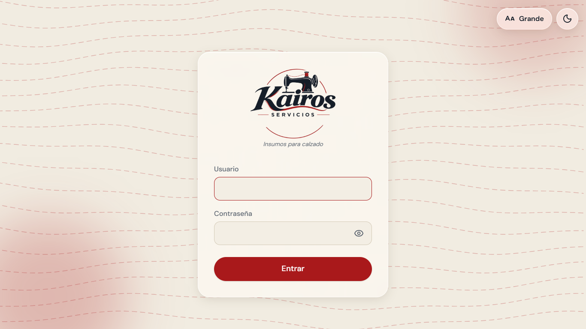
Pantalla de acceso. El usuario y la clave los entrega quien instaló el sistema.
Guarde bien la clave en un lugar que no esté a la vista de los clientes. Si la olvida, quien instaló el sistema puede restablecerla.
Para salir, pulse el icono de la puerta (abajo en la barra de la izquierda). No hace falta salir entre ventas: puede dejar el sistema abierto todo el día.
El menú de la izquierda
Opción
Para qué sirve
Venta (el carrito)
Registrar una venta. Es la pantalla con la que abre el sistema.
Ventas
Ver las ventas ya hechas, anular o devolver.
Cierre del día
Cuadrar la caja al final del día.
Productos
Crear y cambiar productos y precios.
Inventario
Ver cuánto queda de lo que sí se cuenta; registrar entradas.
Proveedores
Datos de quién le surte.
Panel
Resumen de cómo va el negocio.
Rueda dentada
Configuración (copias de seguridad, secciones, etc.).
3. Vender: la pantalla principal
Al entrar, el sistema abre directamente en Venta. La primera vez verá una guía de tres pasos; cuando la entienda, pulse Entendido y no volverá a salir.
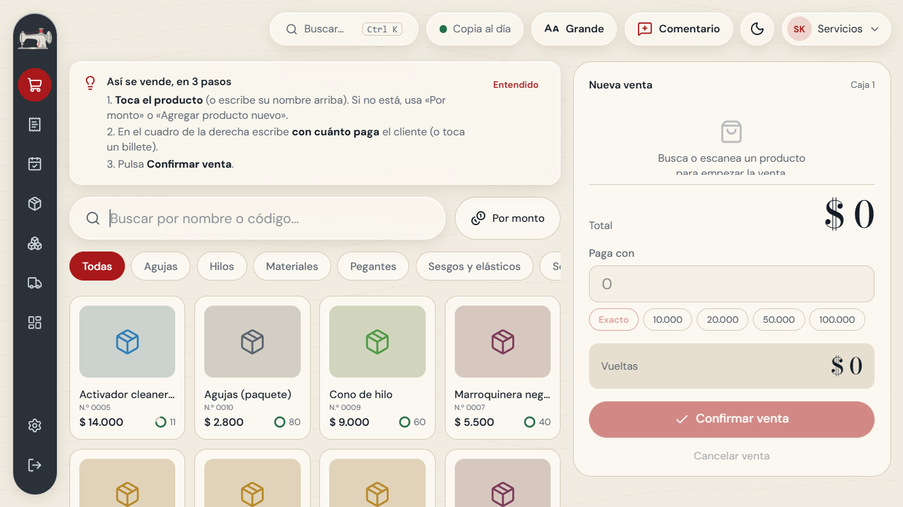
Pantalla de venta con la guía de tres pasos. A la derecha está el cuadro de la venta actual.
Paso a paso
Busque el producto de una de estas formas: escriba parte del nombre en el cuadro grande, toque una de las secciones (Pegantes, Hilos…) para ver solo esas, o toque el producto directamente en la lista.
Toque el producto. Se agrega a la venta, en el cuadro de la derecha. Si el cliente lleva dos, vuelva a tocarlo o use los botones + y −.
Cuando termine de agregar, pase a cobrar (siguiente capítulo).
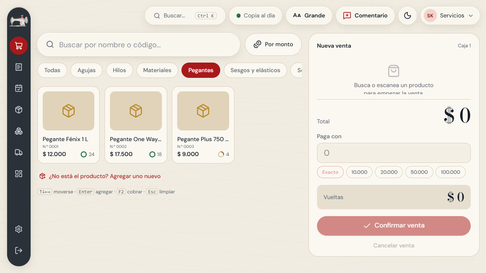
Al tocar una sección solo se ven sus productos.
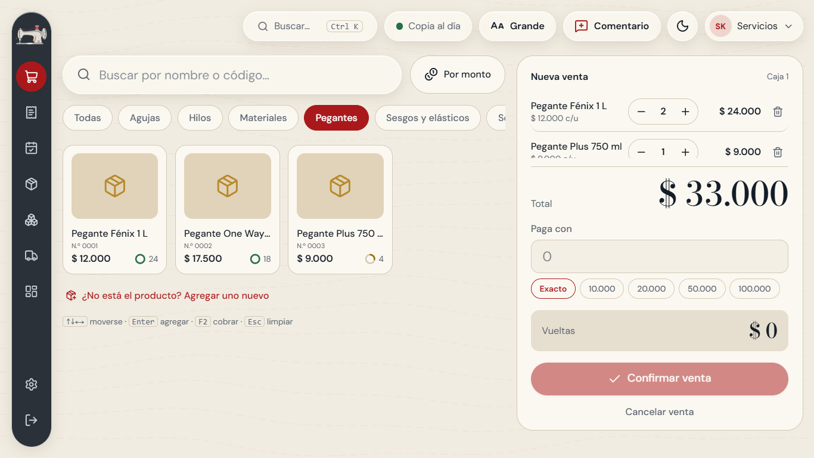
Venta con varios productos. El total grande se actualiza solo.
Si se equivoca de producto: pulse el icono de la caneca junto a la línea para quitarlo. Para empezar de cero, pulse Cancelar venta.
El número con una bolita al lado del precio indica cuántas unidades quedan. Si un producto no tiene número es porque no se lleva su inventario (se explica en el capítulo 9). Si alguno aparece casi vacío, el sistema se lo avisa, pero igual deja venderlo: nunca va a impedir una venta por un error de conteo.
4. Vender «por monto»
A veces el cliente pide «cinco mil de hilo» o el producto no tiene un precio fijo. Para eso existe Por monto: usted solo dice de qué sección es y cuánto vale. El sistema lo anota en esa sección para que el cierre y el Panel sepan cuánto se vendió de cada cosa.
Pulse Por monto (arriba, junto al buscador).
Elija la sección.
Escriba el valor. Si son varias cosas, sume con el signo +, igual que en la calculadora: 12000 + 9000. El sistema muestra el resultado mientras escribe.
Pulse Agregar a la venta.
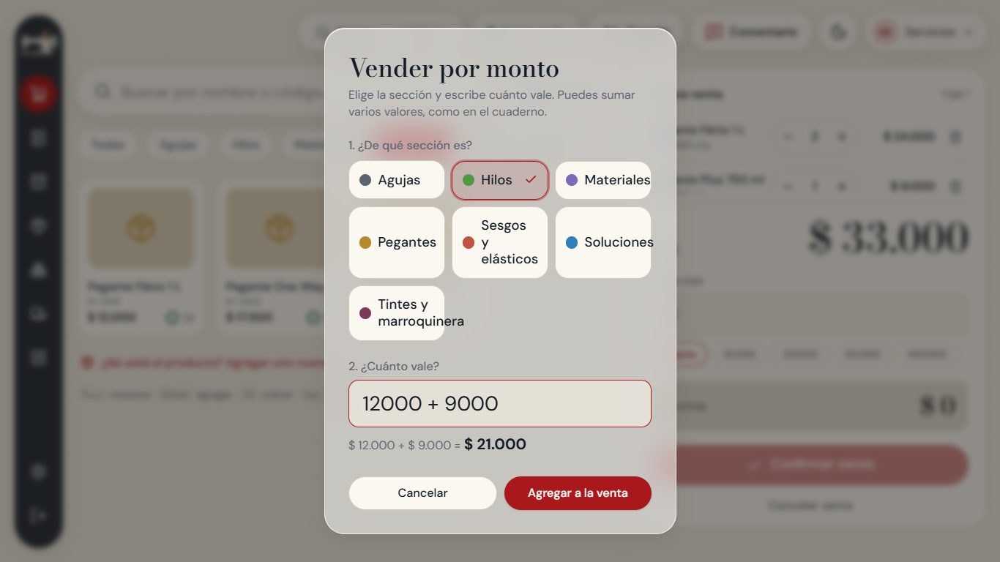
Venta por monto: el sistema suma 12.000 + 9.000 y muestra el total.
Solo se aceptan números y el signo +. Si escribe letras, no aparecen. Los puntos de los miles son opcionales: 12.000 y 12000 valen lo mismo.
Ojo con la ganancia: como no sabemos cuánto costó eso que se vende por monto, el sistema no cuenta ganancia para esas líneas (solo cuentan como venta). Es lo más honesto: prefiere mostrar menos ganancia a inventarla.
5. Si el producto no está
Si busca un producto y no aparece, el sistema ofrece «Agregar uno nuevo». Ya trae escrito el nombre que buscó.
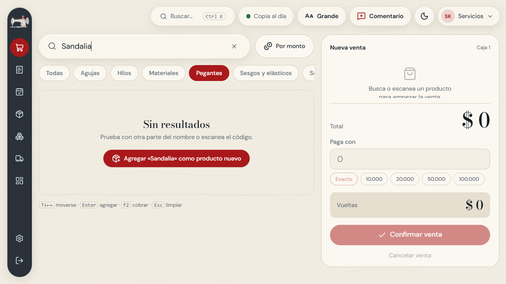
Al buscar algo que no existe aparece el botón para agregarlo.
Pulse Agregar «…» como producto nuevo.
Revise el nombre, escriba el precio y elija la sección.
Pulse Guardar y agregar. El producto queda guardado para siempre y ya está en la venta.
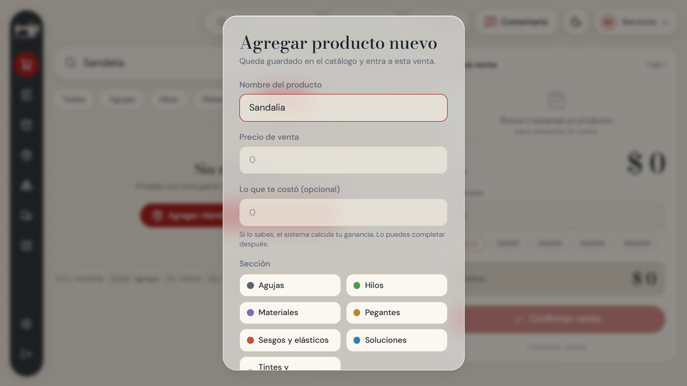
Formulario rápido: solo nombre, precio y sección.
Si no sabe el costo, déjelo para después. En Productos el sistema le avisa «Falta el costo» para que lo complete cuando pueda; con el costo se calcula la ganancia real.
6. Cobrar y dar las vueltas
En el cuadro de la derecha, en Paga con, escriba cuánto entregó el cliente, o toque un billete rápido (10.000, 20.000, 50.000, 100.000). Si pagó exacto, toque Exacto.
El sistema muestra las Vueltas en verde. Entréguelas.
Pulse Confirmar venta.
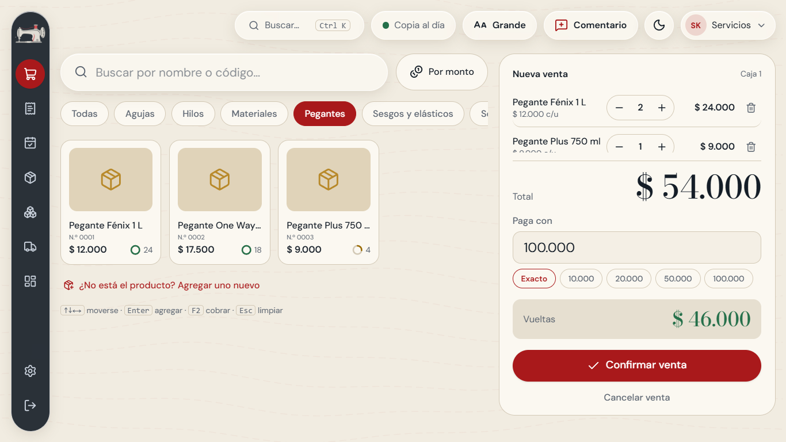
El cliente pagó con 100.000: el sistema calcula las vueltas.
Aparece «Venta registrada» con el total y las vueltas. Pulse Nueva venta para seguir con el siguiente cliente.
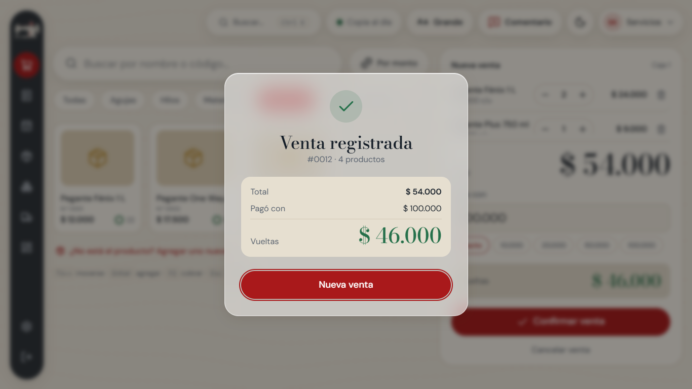
Confirmación de la venta. Ya quedó anotada.
Por ahora el sistema no imprime recibos, tal como se acordó.
7. El cierre del día
Al terminar la jornada se comprueba que el dinero de la caja coincida con lo vendido. Es lo mismo que se hace hoy en el cuaderno, pero el sistema hace la cuenta.
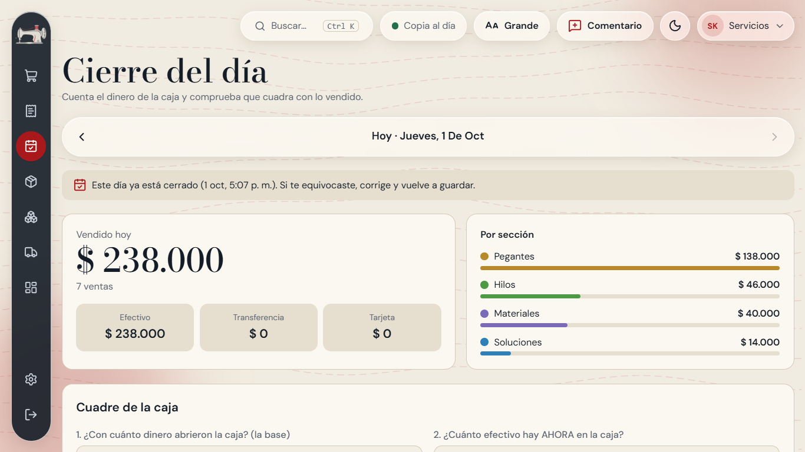
Arriba: lo vendido hoy, por forma de pago y por sección.
Cómo cerrar la caja
Entre a Cierre del día.
En «¿Con cuánto dinero abrieron la caja?» escriba la base con la que empezó el día (si no dejaron base, escriba 0).
En «¿Cuánto efectivo hay AHORA en la caja?» cuente billetes y monedas y escriba el total. No cuente transferencias ni tarjeta.
El sistema compara y dice una de tres cosas:
¡Cuadra! (en verde): todo está bien.
Faltan $… (en rojo): hay menos dinero del que debería. Revise si falta anotar una venta, si hubo un gasto o si se dio mal una vuelta.
Sobran $…: hay más de lo esperado. Suele ser una venta que no se anotó o una vuelta que no se entregó.
Si quiere, escriba una nota («se pagó el almuerzo de la caja»). Luego pulse Guardar cierre del día.
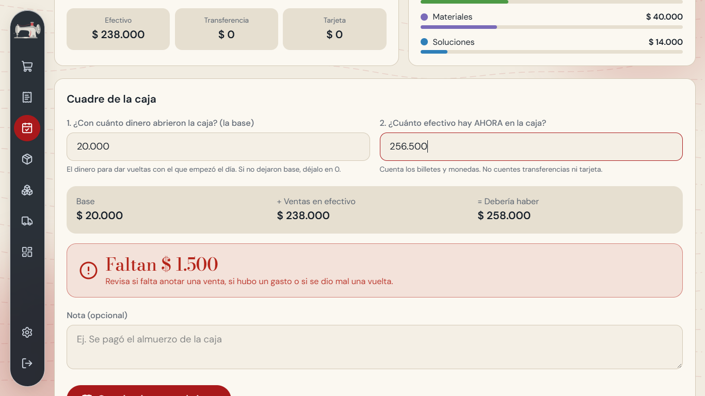
Ejemplo: debería haber 258.000 y hay 256.500, entonces «Faltan $ 1.500».
Si se equivoca al cerrar, no pasa nada: vuelva a entrar al mismo día, corrija los valores y guarde otra vez. Con las flechas de arriba puede revisar los días anteriores.
Esta pantalla la ve el usuario principal del sistema.
8. Productos, secciones y proveedores
Usted mismo puede agregar y cambiar todo; no depende de nadie. En Productos están todos los artículos con su precio y su sección. Use el filtro de categorías para ver solo una sección.
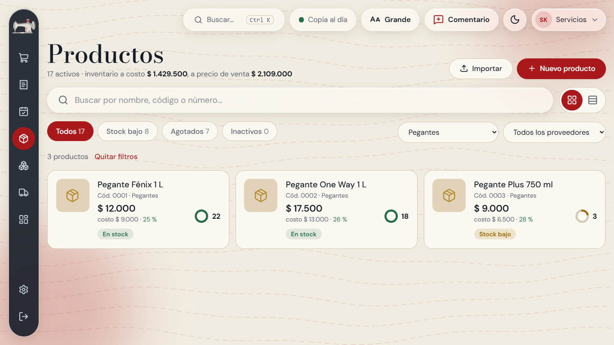
Lista de productos filtrada por la sección «Pegantes».
Crear un producto
Entre a Productos y pulse Nuevo producto.
Escriba el nombre (por ejemplo «Pegante Fénix 1 L»).
Elija la sección y, si quiere, el proveedor. Si la sección no existe, pulse + Nueva categoría.
Escriba el costo (lo que le cuesta a usted) y el precio de venta. El sistema calcula la ganancia por unidad.
Decida si quiere llevar inventario (ver el capítulo 9) y pulse Crear producto.
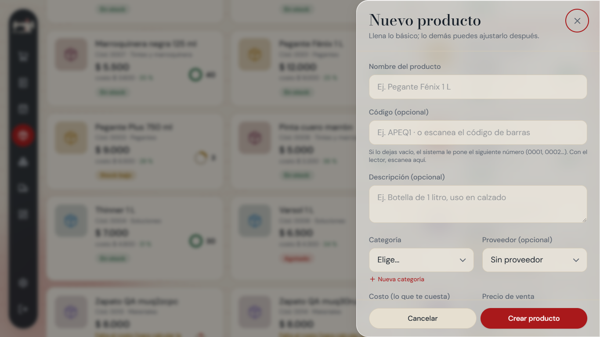
Formulario de nuevo producto. Lo único obligatorio es nombre, sección y precio.
El código es opcional: si lo deja vacío, el sistema le pone el siguiente número (0001, 0002…).
Cambiar un precio
Toque el producto en la lista, cambie el precio y guarde. Las ventas anteriores no se alteran: cada venta recuerda el precio al que se hizo.
Proveedores
En Proveedores puede crear cada proveedor (nombre, teléfono) y ver qué productos le compra a cada uno. Se arman a su gusto: no vienen proveedores puestos, para no equivocarnos con datos que no conocemos.
Secciones
En Configuración → Categorías puede cambiar los nombres de las siete secciones, agregar nuevas o quitar las que no use.
9. Inventario
El inventario dice cuántas unidades quedan de cada producto. Funciona así: cada vez que se vende, baja; cada vez que llega mercancía, sube. Siempre se puede saber por qué cambió un número.
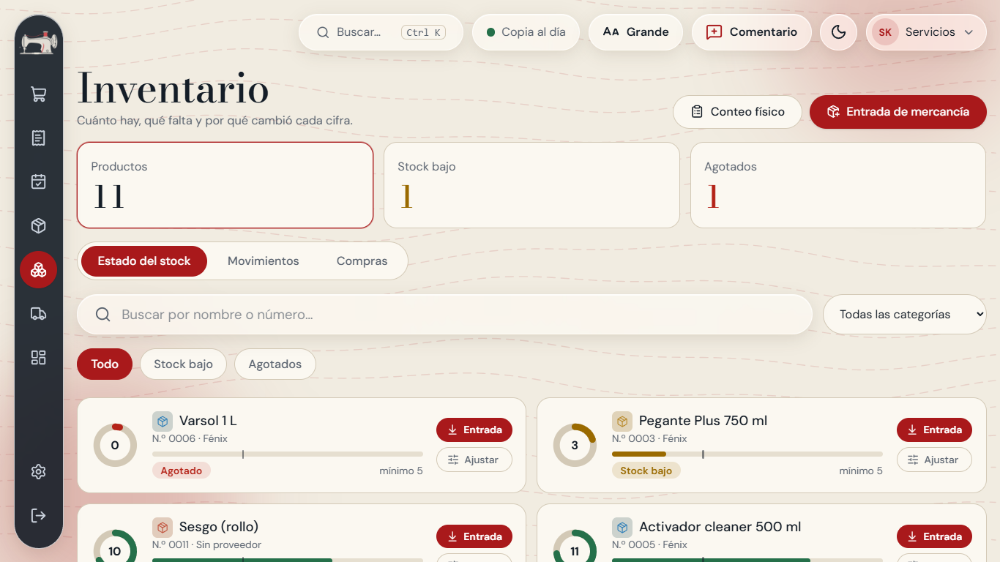
Inventario: cuánto hay de cada producto y cuáles se están acabando.
Productos que sí y que no llevan inventario
Al crear un producto verá la opción «Llevar inventario». Apagada es lo normal para cosas que se venden por monto o que no se cuentan. Esos productos no aparecen en Inventario y nunca se bloquea su venta.
Cuando llega mercancía
Entre a Inventario y pulse Entrada de mercancía.
Elija el producto, escriba cuántas unidades llegaron y el costo. Guarde.
Conteo físico
De vez en cuando conviene contar lo que hay en el estante y compararlo con el sistema. En Inventario, la opción Conteo físico le deja escribir lo contado y ajusta las diferencias dejando constancia.
10. Ventas anteriores, anular y devoluciones
En Ventas está la lista de todo lo vendido, con fecha, hora y total. Toque una venta para ver su detalle.
Anular una venta equivocada
Abra la venta y pulse Anular esta venta.
Escriba el motivo (es obligatorio; sirve para saber qué pasó) y confirme.
La venta queda marcada como anulada, deja de sumar en el cierre y los productos con inventario vuelven a contarse.
Devolución de un cliente
Si el cliente devuelve parte de lo que compró, abra la venta y use la opción de devolución: elija qué y cuántas unidades regresan. El sistema ajusta el total y el inventario.
Importante: no existe «borrar una venta». Anular es la forma correcta; así el dinero y el inventario siempre cuadran.
11. El Panel y la meta
El Panel es el resumen del negocio: cuánto se vendió, cuánto se ganó, cuántas ventas hubo, cuáles son los productos más vendidos y cuáles se están acabando. Puede mirar hoy, ayer, los últimos 7 o 30 días, el mes o un rango que usted escoja.
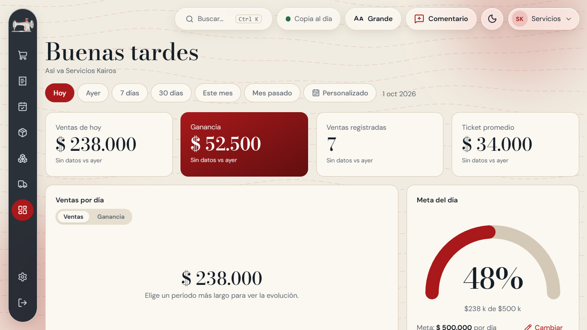
Panel con el resumen del día y la tarjeta de meta.
La meta es opcional
En la tarjeta Meta del día puede fijar cuánto quiere vender por día y ver su avance.
Definir una meta: pulse el botón, escriba el valor y Guardar.
Cambiarla: pulse Cambiar junto a la meta.
No usarla: pulse Cambiar y luego Quitar meta. La tarjeta queda tranquila, sin presionar.
12. Letra grande, modo oscuro y celular
Cambiar el tamaño de la letra
Arriba a la derecha hay un botón «Aa» con el tamaño actual (Normal, Grande, Muy grande). Cada vez que lo toca pasa al siguiente tamaño. El sistema recuerda su elección en ese computador.
Modo claro y oscuro
El botón de la luna (o el sol) cambia entre fondo claro y fondo oscuro. Use el que sea más cómodo para sus ojos.
En el celular
El sistema también se ve bien en el celular o la tablet: el menú pasa abajo, en una barra con iconos.
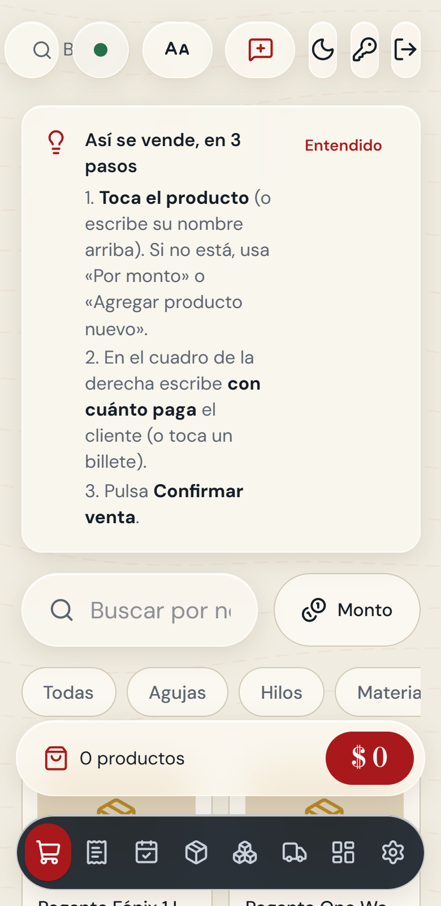
Pantalla de venta en el celular.
Para usarlo desde el celular, este debe estar conectado a la misma red WiFi que el computador de la tienda. Quien instala el sistema le indica la dirección que debe abrir.
13. Copias de seguridad y Excel de respaldo
Toda la información está en este computador. Si el computador se daña, sin una copia fuera de él se perdería todo. Por eso el sistema se protege de tres maneras:
Qué
Cada cuánto
Para qué
Copia automática
Cada 24 horas, guarda las últimas 30
Recuperar todo si algo se daña.
Excel de respaldo
Cada día, en una carpeta visible
Poder ver ventas, cierres y precios aunque el sistema no abra.
Segunda copia (USB o nube)
Junto con cada copia
Que la copia quede fuera del computador.
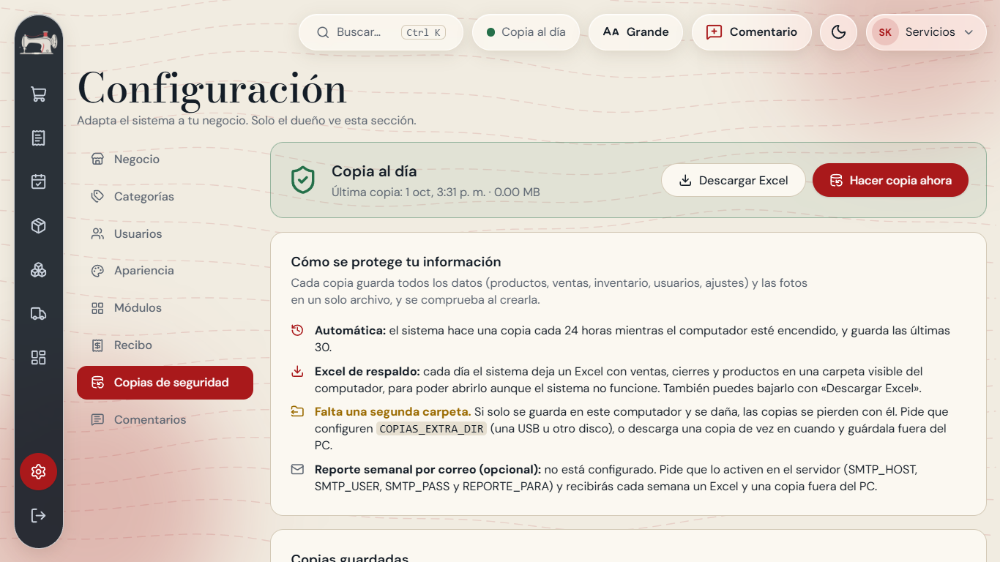
Configuración → Copias de seguridad. El semáforo en verde indica que todo está al día.
Qué debe hacer usted
Mirar de vez en cuando el aviso «Copia al día» (arriba, junto al buscador). Si está en verde, no hay nada que hacer.
Una vez por semana, entrar a Configuración → Copias de seguridad y pulsar Descargar Excel para guardar el archivo donde prefiera (por ejemplo, enviarlo a su correo).
Si el aviso aparece en amarillo o rojo, avise a quien instaló el sistema.
Sobre el cargador: puede dejar el portátil conectado durante el día; los portátiles actuales dejan de cargar cuando la batería está llena. Lo que sí conviene es no dejar que se apague de golpe en medio de la jornada. Si el portátil se queda sin WiFi, el sistema sigue funcionando igual.
14. Comentarios y sugerencias
Durante la semana de prueba nos interesa mucho su opinión: qué le parece fácil, qué le confunde, qué le falta. Arriba, junto al buscador, está el botón Comentario.
Pulse Comentario.
Escriba lo que piensa, con sus palabras. Por ejemplo: «No encuentro el hilo negro».
Pulse Enviar. El sistema guarda también en qué pantalla estaba, para entender mejor.
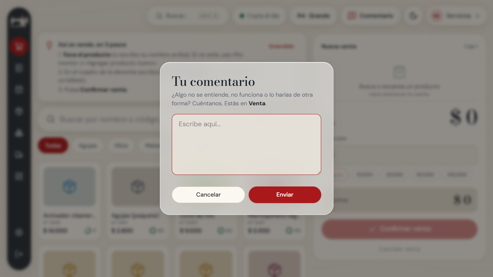
Ventana para escribir un comentario.
Todo lo escrito se puede leer en Configuración → Comentarios y descargar en un solo archivo.
No se preocupe por escribir «bonito» ni por quejarse: cada comentario ayuda a dejar el sistema a su medida.
15. Si algo no funciona
Qué pasa
Qué hacer
La página no abre
Cierre la ventana del navegador y vuelva a abrirla con el icono Servicios Kairos del escritorio. Si sigue igual, reinicie el computador.
No recuerdo la clave
Avise a quien instaló el sistema; puede restablecerla sin perder datos.
Se fue el internet
No pasa nada: el sistema sigue vendiendo normal. Solo el envío de correos queda en pausa.
Anoté una venta mal
Entre a Ventas, abra esa venta, pulse Anular, escriba el motivo y haga la venta de nuevo, correcta.
La caja no cuadra
Revise en Ventas si falta anotar alguna venta del día, si hubo gastos o vueltas mal dadas. Escriba la explicación en la nota del cierre.
La letra se ve muy pequeña
Pulse el botón «Aa» de arriba hasta que se vea cómoda.
Un producto no aparece al buscarlo
Pruebe con otra parte del nombre o toque la sección. Si no existe, use «Agregar uno nuevo».
Sale un mensaje de error que no entiendo
Tome una foto de la pantalla con el celular y envíela a quien instaló el sistema.
Cualquier duda: use el botón Comentario o escriba directamente a quien instaló el sistema. Ninguna pregunta es tonta; para eso estamos.